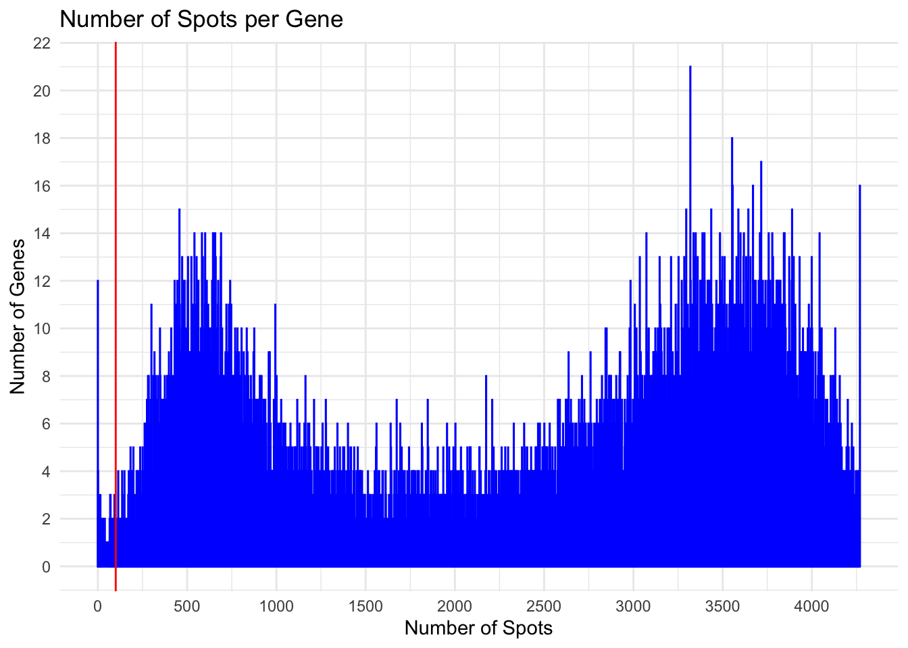
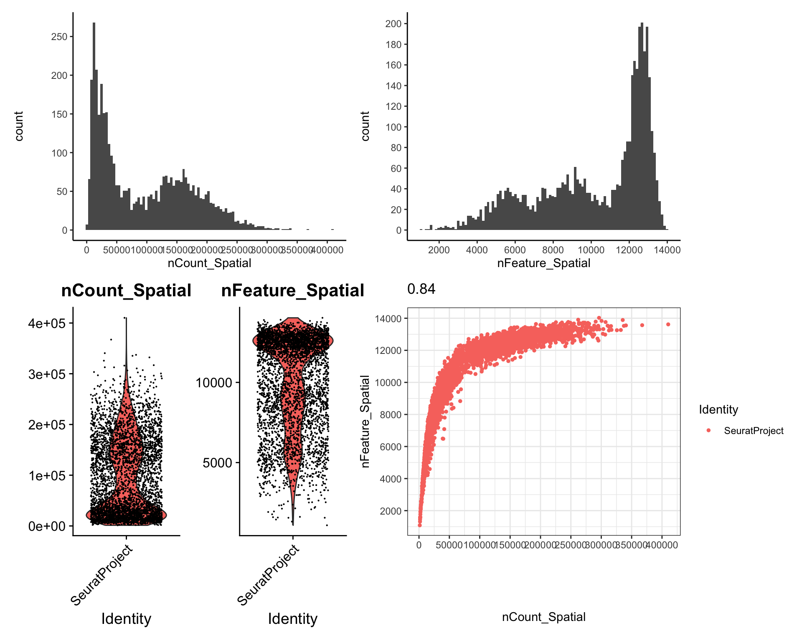
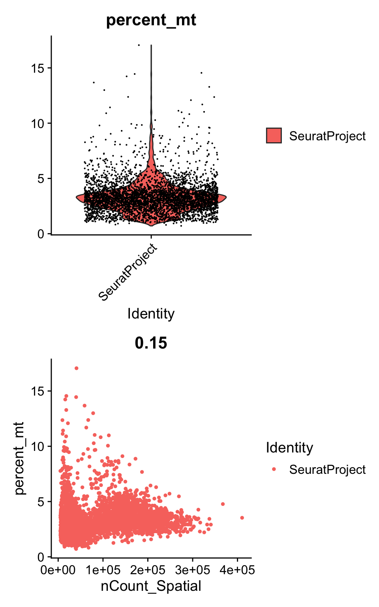
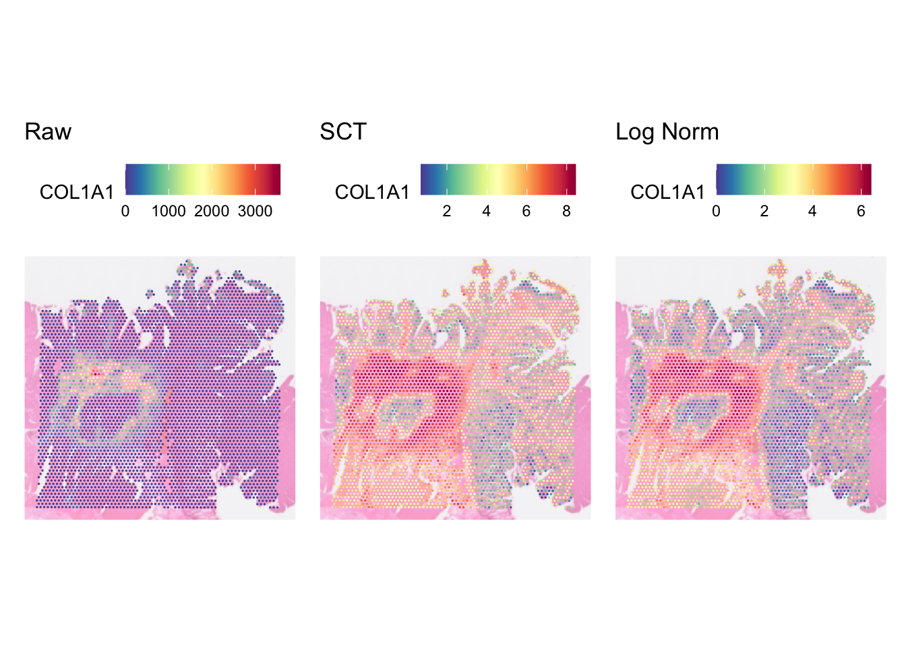

Last updated: 2024-11-20
Checks: 6 1
Knit directory: asi_spatial_workshop_2024/
This reproducible R Markdown analysis was created with workflowr (version 1.7.1). The Checks tab describes the reproducibility checks that were applied when the results were created. The Past versions tab lists the development history.
The R Markdown is untracked by Git. To know which version of the R
Markdown file created these results, you’ll want to first commit it to
the Git repo. If you’re still working on the analysis, you can ignore
this warning. When you’re finished, you can run
wflow_publish to commit the R Markdown file and build the
HTML.
Great job! The global environment was empty. Objects defined in the global environment can affect the analysis in your R Markdown file in unknown ways. For reproduciblity it’s best to always run the code in an empty environment.
The command set.seed(20240925) was run prior to running
the code in the R Markdown file. Setting a seed ensures that any results
that rely on randomness, e.g. subsampling or permutations, are
reproducible.
Great job! Recording the operating system, R version, and package versions is critical for reproducibility.
Nice! There were no cached chunks for this analysis, so you can be confident that you successfully produced the results during this run.
Great job! Using relative paths to the files within your workflowr project makes it easier to run your code on other machines.
Great! You are using Git for version control. Tracking code development and connecting the code version to the results is critical for reproducibility.
The results in this page were generated with repository version 85ecc5f. See the Past versions tab to see a history of the changes made to the R Markdown and HTML files.
Note that you need to be careful to ensure that all relevant files for
the analysis have been committed to Git prior to generating the results
(you can use wflow_publish or
wflow_git_commit). workflowr only checks the R Markdown
file, but you know if there are other scripts or data files that it
depends on. Below is the status of the Git repository when the results
were generated:
Ignored files:
Ignored: .DS_Store
Ignored: .Rhistory
Ignored: .Rproj.user/
Ignored: data/.DS_Store
Ignored: data/single_cell/
Ignored: data/visium/
Ignored: output/visium/
Ignored: visium/
Untracked files:
Untracked: analysis/visium_02.Rmd
Unstaged changes:
Modified: analysis/visium_01.Rmd
Modified: analysis/visium_crc.Rmd
Note that any generated files, e.g. HTML, png, CSS, etc., are not included in this status report because it is ok for generated content to have uncommitted changes.
There are no past versions. Publish this analysis with
wflow_publish() to start tracking its development.
In this part of the visium workshop, we will introduce steps to perform Quality Control (QC) and normalisation on visium data.
library(Seurat)
library(qs)
library(ggplot2)
library(scales)We will be using the Seurat object that we have previously loaded in part 1.
dat <- qread("output/visium/visium_seurat.qs")
datAn object of class Seurat
18085 features across 4269 samples within 1 assay
Active assay: Spatial (18085 features, 0 variable features)
1 layer present: counts
1 spatial field of view present: slice1QC is part of data pre-processing process. The main purpose of it is to remove stuff (e.g., spots and genes) that are of low quality. If not removed, these can negatively impact your downstream analyses, and potentially leading to false findings and interpretations.
Performing QC on the data can be seen as a delicate balancing act. Overly aggressive QC will yield very clean data, but at the same token, can remove stuff that would have otherwise led to an interesting biology. Overly liberal QC may include many dud stuff (or just plain noise) that makes interpretation hard. Thus, it is always important to inspect the result of a given QC strategy, and fine tune as required.
By default, Load10X_Spatial will load up all the genes
in the data. However, it is highly likely for some genes to only be
expressed (have raw count > 0) in only a small number of spots. It
may well be that there are only really a tiny number of spots that
expressed this gene that it may well be a noise. Thus, it is best to
remove them as otherwise you may be running the risk of them negatively
impacting further downstream analyses.
To work out the number of spots expressing a given gene, you can use a histogram.
# Count how many spots each gene is expressed in.
spots_per_gene <- rowSums(dat[["Spatial"]]$counts > 0)
# Plot as histogram
# Have to convert spots_per_gene to data.frame first, the column is spots
ggplot(data.frame(spots = spots_per_gene), aes(x=spots)) +
geom_histogram(binwidth = 1, colour = 'blue') +
geom_vline(xintercept = 100, colour = 'red') +
theme_minimal() +
labs(title = "Number of Spots per Gene",
x = "Number of Spots",
y = "Number of Genes") +
scale_x_continuous(breaks = pretty_breaks(10)) +
scale_y_continuous(breaks = pretty_breaks(10))
The histogram above illustrates how many genes (y-axis) are expressed in how many spots (x-axis). For example, the left most bar shows there are 12 genes that are not expressed in any spots at all.
From the histogram, we can see the distribution of the gene expressions, and work out a sensible threshold to filter out genes. In other words, identifying the minimum number of spots a gene must be expressed for it to be included in our data. For this dataset, we will set the threshold to 100, i.e. for a gene to be included, it needs to be expressed in at least 100 spots, which is around 2.3% of total spots we have in the data.
# names will give you the gene names
genes_to_keep <- names(spots_per_gene[spots_per_gene >= 100])
# Subset the Seurat object
dat_fil <- subset(dat, features = genes_to_keep)The threshold 100 is not fixed. This will vary depending on the dataset you have on hand. So adjust this as you see fit.
You may notice that the value 100 seems high, especially if you have some experience QCing some scRNAseq data. However, it is worth remembering that visium is a spot based technology and that each spot captures more than 1 cell.
In addition to QC the genes, we should also QC the spots to make sure that we remove spots that are low quality. These could be spots that lie outside of the tissue, or have low library size or low number of genes expressed, or expressed high mitochondrial genes.
The vanilla 10X SpaceRanger pipeline automatically identifies the spots that overlap with tissue. This is not always consistent or reliable. Therefore, there is no reason why
To identify spots that lie outside of the tissue, we can use the Loupe Browser software. Loupe browser is a visualisation software produced by 10x to make it easier for users to interact with their data. It can be downloaded from 10x website.
To load the data up to Loupe browser, you need to have on hand the Loupe browser file generated by spaceranger count. For this dataset, you can download it from 10x website (choose Visium CytoAssist v2 P2 crc on the right panel): https://www.10xgenomics.com/products/visium-hd-spatial-gene-expression/dataset-human-crc.
Using the loop browser, you can see which spots lie outside of the tissue, mark them, and export their barcodes out:
If you happen to make a mistake when using the lasso tool, and accidentally selected spots that you meant to keep, use the eraser tool to “erase” those spots from the list by selecting them.
After exporting the spots barcode in a csv file, we can load it up and remove them from the seurat object:
spots_to_remove <- read.csv("data/visium/spots_to_remove_v2.csv")
# add it as a metadata
dat_fil[[]]$remove_spot_from_loupe <- Cells(dat_fil) %in% spots_to_remove$Barcode
# store as separate object just for demo
dat_fil <- subset(x = dat_fil, remove_spot_from_loupe == FALSE)
dat_filAn object of class Seurat
17991 features across 4006 samples within 1 assay
Active assay: Spatial (17991 features, 0 variable features)
1 layer present: counts
1 spatial field of view present: slice1We should also remove spots which express low library size and/or low number of genes expressed.
Few plots we can draw to check this are violin plots, histogram, and plain scatter plots:
plt1 <- ggplot(dat_fil[[]], aes(x=nCount_Spatial)) + geom_histogram(bins = 100) +
theme_classic() +
scale_y_continuous(breaks = pretty_breaks(10)) +
scale_x_continuous(breaks = pretty_breaks(10))
plt2 <- ggplot(dat_fil[[]], aes(x=nFeature_Spatial)) + geom_histogram(bins = 100) +
theme_classic() +
scale_y_continuous(breaks = pretty_breaks(10)) +
scale_x_continuous(breaks = pretty_breaks(10))
plt3 <- VlnPlot(dat_fil, features = c("nCount_Spatial", "nFeature_Spatial"))Warning: Default search for "data" layer in "Spatial" assay yielded no results;
utilizing "counts" layer instead.plt4 <- FeatureScatter(dat_fil, feature1 = "nCount_Spatial", feature2 = "nFeature_Spatial") +
scale_y_continuous(breaks = pretty_breaks(10)) +
scale_x_continuous(breaks = pretty_breaks(10)) +
theme_bw()
plt1 + plt2 + plt3 + plt4
The histograms and violin plots are great for determining the minimum cutoff for library size and/or number of genes expressed, while the scatter plot is handy to check whether the spots with low library size also has low number of genes expressed, which make them the prime candidates for removal.
For this workshop, we will exclude spots that express less than 3000 genes. Incidentally, this threshold will also automatically exclude spots with small library size.
dat_fil <- subset(x = dat_fil, nFeature_Spatial >= 3000)
dat_filAn object of class Seurat
17991 features across 3969 samples within 1 assay
Active assay: Spatial (17991 features, 0 variable features)
1 layer present: counts
1 spatial field of view present: slice1Unlike single cell in which cells that have high library size are often removed because they may well represent doublets or multiplets, for visium data, spots with high library size may not necessarily mean bad spots as visium data is not single cell resolution. Those spots may well just contain an assortment of cell types which may lead to interesting biology!
Just like in single cell, we can also QC the spots based on the percentage of mitochondria genes expressed. Spots that have excessively high expression of mitochondria genes may contain low quality or dying cells.
# This function will compute, for each spot, percentage of transcripts that mapped to mitochondria genes
dat_fil[['percent_mt']] <- PercentageFeatureSet(dat_fil, pattern = '^MT-')
# Visualize them
plt1 <- VlnPlot(dat_fil, features = "percent_mt")Warning: Default search for "data" layer in "Spatial" assay yielded no results;
utilizing "counts" layer instead.plt2 <- FeatureScatter(dat_fil, feature1 = 'nCount_Spatial', feature2 = 'percent_mt')
plt1 + plt2
We will remove spots that have > 12% mitochondria genes.
dat_fil <- subset(dat_fil, subset = percent_mt < 12)
dat_filAn object of class Seurat
17991 features across 3959 samples within 1 assay
Active assay: Spatial (17991 features, 0 variable features)
1 layer present: counts
1 spatial field of view present: slice1After QC, we ended up with 3,950 spots.
qsave(dat_fil, "output/visium_seurat_qced.qs")Why is this necessary? The same reason as any other RNA seq based protocol (including single cell). Differences in library size may well be due to variances in sampling of RNA molecules. During library preparation, it is not possible to capture all molecules and sequence them. Thus, the unevenness of library sizes and differences in gene expression across spots, may well be due to variance in sampling. There are also other technical variations that contributed to the differences that need to be accounted for, e.g., Probe hybridization efficiency and PCR amplification biases.
Normalisation aims to adjust differences introduced due to technical variations. In single cell, there are many methods that have been developed to do this (see here for benchmarking paper). Admittedly, not all of them will be suitable for visium data. For this tutorial, we will demonstrate classic log normalisation and SCTransform.
Briefly SCTransform fits a regularised negative binomial model to the raw count matrix, using sequencing depth as a covariate.
Note, SCT requires glmGamPoi package:
BiocManager::install('glmGamPoi')
# Might need to increase the size limit for global variables so parallel workers
# can access it. 2GB should be sufficient.
options(future.globals.maxSize = 2000 * 1024^2)
# Note, return.only.var.genes can be set to TRUE if we want to get back
# the expression of only highly variable genes in scale.data
dat_fil <- SCTransform(dat_fil, assay = "Spatial", verbose = TRUE, return.only.var.genes = FALSE)
# Inspect after
dat_filAn object of class Seurat
35982 features across 3959 samples within 2 assays
Active assay: SCT (17991 features, 3000 variable features)
3 layers present: counts, data, scale.data
1 other assay present: Spatial
1 spatial field of view present: slice1By default, SCTransform will store the output in a different assay called “SCT”.
head(dat_fil[['SCT']]$data, c(20, 5))20 x 5 sparse Matrix of class "dgCMatrix"
AACAATGTGCTCCGAG-1 AACACCATTCGCATAC-1 AACACGACAACGGAGT-1
SAMD11 . 1.0986123 .
NOC2L 0.6931472 1.3862944 1.6094379
KLHL17 . 0.6931472 .
PLEKHN1 0.6931472 0.6931472 1.6094379
PERM1 . . .
HES4 0.6931472 1.6094379 .
ISG15 1.7917595 2.8332133 1.9459101
AGRN 1.0986123 1.7917595 2.1972246
RNF223 . . .
C1orf159 1.0986123 0.6931472 .
TTLL10 0.6931472 . .
TNFRSF18 . 0.6931472 0.6931472
TNFRSF4 . 0.6931472 .
SDF4 2.7080502 3.3672958 2.7080502
B3GALT6 1.3862944 1.0986123 1.6094379
C1QTNF12 0.6931472 . .
UBE2J2 1.3862944 2.1972246 1.7917595
SCNN1D . . .
ACAP3 2.0794415 2.1972246 0.6931472
PUSL1 1.0986123 0.6931472 0.6931472
AACACGCAGATAACAA-1 AACACTCGTGAGCTTC-1
SAMD11 0.6931472 0.6931472
NOC2L 1.0986123 1.6094379
KLHL17 1.0986123 1.3862944
PLEKHN1 0.6931472 .
PERM1 . .
HES4 0.6931472 1.7917595
ISG15 1.3862944 2.3025851
AGRN 1.6094379 2.1972246
RNF223 . .
C1orf159 0.6931472 .
TTLL10 . .
TNFRSF18 0.6931472 1.3862944
TNFRSF4 0.6931472 .
SDF4 3.2958369 2.7080502
B3GALT6 1.0986123 .
C1QTNF12 . .
UBE2J2 1.7917595 1.0986123
SCNN1D . .
ACAP3 1.3862944 2.3025851
PUSL1 1.3862944 . As previously discussed in the beginning, an assay can contain multiple layers. After running SCTransfrom, you shall notice a new assay call SCT containing SCTransformed counts. Specifically, counts layer contains corrected UMI counts, data contains log1p - log(1 + counts) of the corrected UMI counts, scale.data contains the counts in the data layer transformed using pearson residuals calculated by SCTransform.
Log normalisation is commonly used for single cell data. It is also widely used for normalising visium data where for each spot and gene, we divide the expression by the spot’s library size and multiply the value by a size factor (say 10,000). Then we perform log1p operation where we run logarithmic transformation after adding value of 1. Why the addition, because log of 0 is infinity.
# By default, this will run log CPTT
# The data layer will contain the normalised counts.
# The counts layer will contain the unnormalised count.
dat_fil <- NormalizeData(dat_fil, verbose = FALSE, assay = "Spatial")
dat_filAn object of class Seurat
35982 features across 3959 samples within 2 assays
Active assay: SCT (17991 features, 3000 variable features)
3 layers present: counts, data, scale.data
1 other assay present: Spatial
1 spatial field of view present: slice1Upon running this, you will notice an additional layer in the Spatial
assay call data which contains the output of log
normalisation function.
We can plot the output of SCTransform, log normalisation, and raw count for a gene (say COL1A1), side by side to see what they look like.
# Important to change assay before plotting to make sure it is the right one.
DefaultAssay(object = dat_fil) <- "SCT"
plt_sct <- SpatialFeaturePlot(
dat_fil,
features = "COL1A1",
image.alpha = 0.5,
pt.size.factor = 4
) + ggtitle("SCT")
DefaultAssay(object = dat_fil) <- "Spatial"
plt_lognorm <- SpatialFeaturePlot(
dat_fil,
features = "COL1A1",
image.alpha = 0.5,
pt.size.factor = 4
) + ggtitle("Log Norm")
# Plot raw data for comparison
plt_raw <- SpatialFeaturePlot(
dat_fil,
features = "COL1A1",
image.alpha = 0.5,
pt.size.factor = 4,
slot = 'counts'
) + ggtitle("Raw")
# Put all 3 plots side by side for comparison
plt_raw + plt_sct + plt_lognorm
There are pros and cons on choosing either SCT or log normalisation. From the plot, you can see they are different. Literatures say SCT mitigates the correlation between library size and normalised counts which log normalisation failed to do so. On the other hand, log normalisation is very simple (you can compute it by hand if you like!) and fast to compute, very well established, intuitive, and compatible with a variety of analysis tools and pipelines. While SCT may be more robust for data with high variability in sequencing depth, at the end of the day, choose whichever method that you are comfortable with.
For this tutorial, we will use the normalised counts generated by SCTransform.
# Set the default assay to SCT
DefaultAssay(dat_fil) <- "SCT"
# save so we can reload if we need to
qsave(dat_fil, "output/visium_seurat_qced_norm.qs")
sessionInfo()R version 4.4.1 (2024-06-14)
Platform: aarch64-apple-darwin20
Running under: macOS Sonoma 14.6
Matrix products: default
BLAS: /Library/Frameworks/R.framework/Versions/4.4-arm64/Resources/lib/libRblas.0.dylib
LAPACK: /Library/Frameworks/R.framework/Versions/4.4-arm64/Resources/lib/libRlapack.dylib; LAPACK version 3.12.0
locale:
[1] en_US.UTF-8/en_US.UTF-8/en_US.UTF-8/C/en_US.UTF-8/en_US.UTF-8
time zone: Australia/Sydney
tzcode source: internal
attached base packages:
[1] stats graphics grDevices utils datasets methods base
other attached packages:
[1] scales_1.3.0 ggplot2_3.5.1 qs_0.27.2 Seurat_5.1.0
[5] SeuratObject_5.0.2 sp_2.1-4 workflowr_1.7.1
loaded via a namespace (and not attached):
[1] RColorBrewer_1.1-3 rstudioapi_0.16.0
[3] jsonlite_1.8.9 magrittr_2.0.3
[5] ggbeeswarm_0.7.2 spatstat.utils_3.1-0
[7] farver_2.1.2 rmarkdown_2.28
[9] zlibbioc_1.50.0 fs_1.6.5
[11] vctrs_0.6.5 ROCR_1.0-11
[13] DelayedMatrixStats_1.26.0 spatstat.explore_3.3-2
[15] S4Arrays_1.4.1 htmltools_0.5.8.1
[17] SparseArray_1.4.8 sass_0.4.9
[19] sctransform_0.4.1 parallelly_1.38.0
[21] KernSmooth_2.23-24 bslib_0.8.0
[23] htmlwidgets_1.6.4 ica_1.0-3
[25] plyr_1.8.9 plotly_4.10.4
[27] zoo_1.8-12 cachem_1.1.0
[29] whisker_0.4.1 igraph_2.0.3
[31] mime_0.12 lifecycle_1.0.4
[33] pkgconfig_2.0.3 Matrix_1.7-0
[35] R6_2.5.1 fastmap_1.2.0
[37] GenomeInfoDbData_1.2.12 MatrixGenerics_1.16.0
[39] fitdistrplus_1.2-1 future_1.34.0
[41] shiny_1.9.1 digest_0.6.37
[43] colorspace_2.1-1 S4Vectors_0.42.1
[45] patchwork_1.3.0 ps_1.8.0
[47] rprojroot_2.0.4 tensor_1.5
[49] RSpectra_0.16-2 irlba_2.3.5.1
[51] GenomicRanges_1.56.2 labeling_0.4.3
[53] progressr_0.14.0 fansi_1.0.6
[55] spatstat.sparse_3.1-0 httr_1.4.7
[57] polyclip_1.10-7 abind_1.4-8
[59] compiler_4.4.1 withr_3.0.1
[61] fastDummies_1.7.4 highr_0.11
[63] MASS_7.3-61 DelayedArray_0.30.1
[65] tools_4.4.1 vipor_0.4.7
[67] lmtest_0.9-40 beeswarm_0.4.0
[69] httpuv_1.6.15 future.apply_1.11.2
[71] goftest_1.2-3 glmGamPoi_1.16.0
[73] glue_1.7.0 callr_3.7.6
[75] nlme_3.1-166 promises_1.3.0
[77] grid_4.4.1 Rtsne_0.17
[79] getPass_0.2-4 cluster_2.1.6
[81] reshape2_1.4.4 generics_0.1.3
[83] gtable_0.3.5 spatstat.data_3.1-2
[85] tidyr_1.3.1 RApiSerialize_0.1.4
[87] data.table_1.16.0 XVector_0.44.0
[89] stringfish_0.16.0 utf8_1.2.4
[91] BiocGenerics_0.50.0 spatstat.geom_3.3-3
[93] RcppAnnoy_0.0.22 ggrepel_0.9.6
[95] RANN_2.6.2 pillar_1.9.0
[97] stringr_1.5.1 spam_2.10-0
[99] RcppHNSW_0.6.0 later_1.3.2
[101] splines_4.4.1 dplyr_1.1.4
[103] lattice_0.22-6 survival_3.7-0
[105] deldir_2.0-4 tidyselect_1.2.1
[107] miniUI_0.1.1.1 pbapply_1.7-2
[109] knitr_1.48 git2r_0.33.0
[111] gridExtra_2.3 IRanges_2.38.1
[113] SummarizedExperiment_1.34.0 scattermore_1.2
[115] stats4_4.4.1 xfun_0.47
[117] Biobase_2.64.0 matrixStats_1.4.1
[119] UCSC.utils_1.0.0 stringi_1.8.4
[121] lazyeval_0.2.2 yaml_2.3.10
[123] evaluate_1.0.0 codetools_0.2-20
[125] tibble_3.2.1 cli_3.6.3
[127] RcppParallel_5.1.9 uwot_0.2.2
[129] xtable_1.8-4 reticulate_1.39.0
[131] munsell_0.5.1 processx_3.8.4
[133] jquerylib_0.1.4 GenomeInfoDb_1.40.1
[135] Rcpp_1.0.13 globals_0.16.3
[137] spatstat.random_3.3-2 png_0.1-8
[139] ggrastr_1.0.2 spatstat.univar_3.0-1
[141] parallel_4.4.1 dotCall64_1.1-1
[143] sparseMatrixStats_1.16.0 listenv_0.9.1
[145] viridisLite_0.4.2 ggridges_0.5.6
[147] crayon_1.5.3 leiden_0.4.3.1
[149] purrr_1.0.2 rlang_1.1.4
[151] cowplot_1.1.3